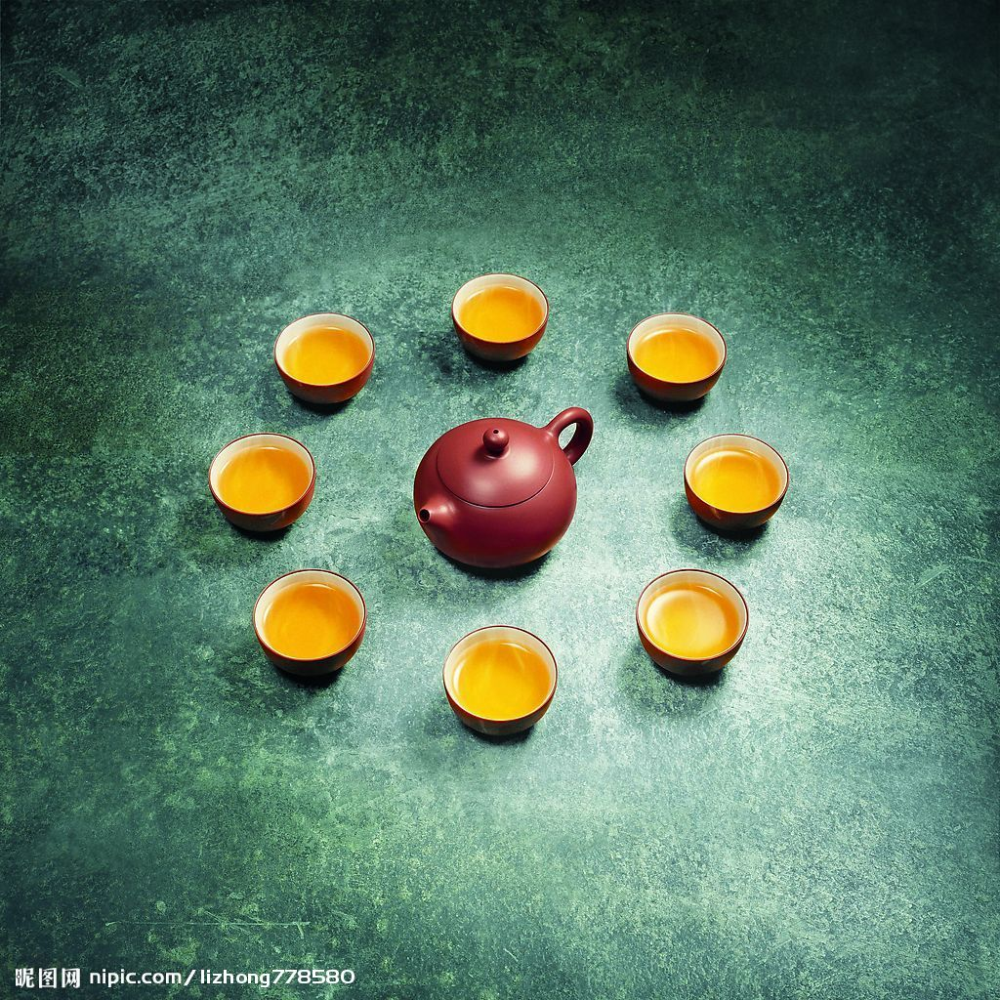

洗茶：将沸水倒入壶中，又迅速倒出。
冲泡：沸水再次入壶，倒水过程中壶嘴“点头”三次，即所谓“凤凰三点头”，向 客人示敬. “春风拂面”：水要高出壶口，用壶盖拂去茶末儿。
封壶：盖上壶盖，用沸水遍浇壶身。
分杯：用茶夹将闻香杯、品茗杯分组，放在茶托上。 “玉液回壶”：将壶中茶汤倒入公道杯，使每个人都能品到色、香、味一致的茶。
分壶：将茶汤分别倒入闻香杯，茶斟七分满。
奉茶：以茶奉客。
闻香：客人将茶汤倒入品茶杯，轻嗅闻香杯中的余香。
品茗：客人用三指取品茗杯，分三口轻啜慢饮在古筝的伴奏下，主泡火熏香。净手，先引茶人荷，请来宾赏茶，然后是赏具：品茶讲究用景瓷宜陶－－景德镇的瓷器。宜兴的紫砂壶。烫杯温壶是将沸水倾入紫砂壶、公道杯、闻香杯、品茗杯中，洁具提温。“乌龙入宫”：将乌龙茶放入茶壶。
茶道要遵循一定的法则。唐代为克服九难，即造、别、器、火、水、炙、末、煮、饮。宋代为三点与三不点品茶，“三点”为新茶、甘泉、洁器为一，天气好为一，风流儒雅、气味相投的佳客为一；反之，是为“三不点”。明代为十三宜与七禁忌。“十三宜”为一无事、二佳客、三独坐、四咏诗、五挥翰、六徜徉、七睡起、八宿醒、九清供、十精舍、十一会心、十二鉴赏、十三文僮；“七禁忌”为一不如法、二恶具、三主客不韵、四冠裳苛礼、五荤肴杂味、六忙冗、七壁间案头多恶趣。
茶道程序八步骤

图片
图片
图片
图片